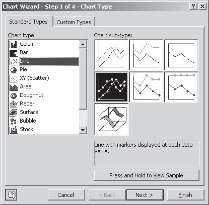

If numbers can talk, charts positively sing. Creating charts with spreadsheets is even easier than creating formulas. To insert a simple chart:
Select a range of values in your spreadsheet (such as sales figures for 12 months), click the little chart icon (or choose Insert/Chart) and in the Chart Wizard dialog box which appears immediately click Finish.
A super-fast way to generate a chart is to select a range of values and hit F11 or Alt–F1. A chart will magically appear in the workbook as a new tab sheet (right-click on the tab and choose Delete if you want to get rid of it).
As soon as you click Finish, the Wizard will close and a chart will appear in the spreadsheet. You can move and resize this image by clicking on the borders.
If you double-click and right-click on various parts of the chart, dialog boxes open allowing you to change the content and appearance of the chart. I will leave you to experiment with this (see also the Working with Charts topic in the spreadsheet Help file). The Chart Wizard in Fig. 5.1 hints at the range of options available. In the instructions given a moment ago, I ignored the Wizard. When you first insert a chart you are, of course, free to step through the Wizard immediately, before clicking Finish.

There are examples of charts in this chapter, in the book as a whole, and in the sample spreadsheets available for download from the website.
When you have created a spreadsheet chart style which suits you, you can save it for future use. Right-click the chart, choose Chart Type/Custom Type and click the Add button. To make the chart the default, in the same dialog box, click Set as default chart.
The inset provides suggestions on choosing chart types. I suggest keeping charts simple. A mass of lines on a graph, too many components in a bar or pie chart, and dominant colours can be overwhelming. You rarely even need gridlines (horizontal lines which spreadsheets tend to include by default), because you cannot accurately read figures off of a chart. If you expect users to want the detailed figures include them in a table, perhaps in an annex. Note that if the chart is still in a spreadsheet, you can click on the plot and the underlying value will be displayed.
By the way, some purists complain that 3D charts are a waste of time because they also obscure detail. Maybe. I happen to think that they can look good when used sensibly.
Including charts in written reports helps readers interpret and understand the figures. To insert a chart in a report as an image:
To insert a chart as a dynamic link (as discussed in Chapter 4):
With this dynamic link, the chart in your report will update automatically if you change the numbers in the spreadsheet. This can be useful when you are developing budgets and plans, or using standard reports over and over again.
‘Summaries can be very useful, but they are not the details.’
—J.W. Tukey
Charts: choosing and using
|